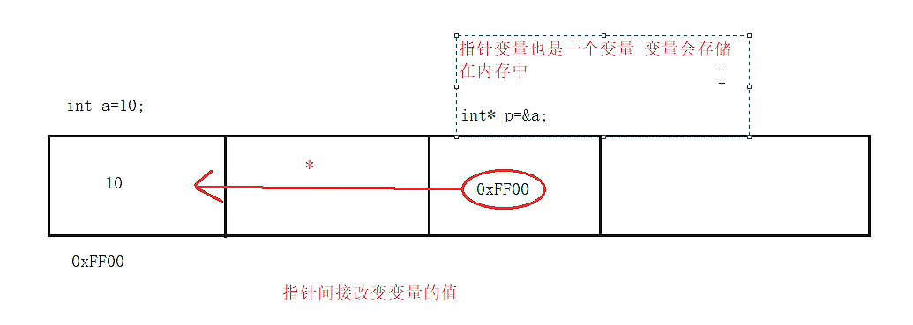
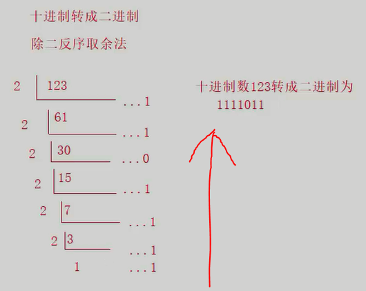

主要代码索引
- printf不同进制输出
- char与int混合运算
- 第三章
- for 循环示例
- while 循环示例
- 跳出语句 continue
- 电子计时器
- 第六章
- 循环打印一维数组
- 冒泡排序法
- 循环打印二维数组
- 二维数组应用
- 字符串定义和输入和输出
- 字符串比较
- 第七章
- 利用 & 打印变量地址
- 地址传递
- 定义冒泡排序函数（传递数组）
- 利用指针变量操作数组
- 指针数组示例
- 第十章
一、前言
考试基本要求
报名:
自己去官网上查找自己省份二级考试的报名信息，在规定时间内按照省份的不同，在各考点中按就近原则选择考点报考计算机二级考试。
考试信息:
1.科目:语言程序设计类(C、C++、Java、VB、Web、python)、数据库程序设计类(Access、MySQL)、办公软件高级应用(Office),任选一科。
2.形式:采取上机形式，在 120 分钟内答题，满分100分。
3.获证条件: 六十分万岁!。
二级 C 语言考题格式:
单项选择40题，每题1分。填空题2~3个，18分。程序改错题2~3个，18分。程序设计一题，24分。
考试内容
二级知识点大约以下十二处:
- C语言程序结构
- 数据类型及运算
- 基本语句
- 选择结构程序设计
- 循环结构程序设计
- 数组的定义和引用
- 函数
- 编译预处理
- 指针
- 结构体与共用体
- 位运算
- 文件操作
不管哪个考试，选择、循环结构都是重点，而从编译预处理到文件操作这部分内容考的就比较少了。
学校的考试，往届的题中没有考过结构体、指针、文件操作等知识点，但经过多方打听，今年结构体必考（简单用法），也会考一点指针和文件操作，不考共用
体、位运算。
C 的特点
C 能够直接访问物理地址进行操作，能负担大部分汇编的功能，既可编写系统软件，也可编写桌面应用。它简洁、数据类型、运算符都很丰富，以函数作为程序
的基本单位，实现程序的模块化，是完全模块化和结构化的语言。目前 C 的主要应用是编写系统、底层驱动、嵌入式等离硬件很近的方向。
C 语言对内存有着精妙的把控，对不了解计算机的童鞋来说，学习 C 语言还有助于 they 理解计算机的硬件组成，初步体会其内部的工作原理，因此 C 语言
也常被形容为程序员的“内功”语言。
二、C语言程序结构
主函数
即 main() 函数，每个 C 程序都有且只有一个主函数，程序由一个主函数和若干其它函数组成，程序主体全都写在 main() 函数内。
main() 函数是程序的入口，不论它在哪，程序总是从 main() 函数的顶部开始顺序向下执行。
其它函数
函数是用来实现各种功能的，程序几乎所有工作由函数完成，函数是 C 的基本单位。
主函数外的函数称为其它函数，其它函数分为两类: 系统函数、用户自定义函数。
系统函数: 即库函数，由编译系统提供，用户不必自己定义这些函数，可以直接使用，例如打印函数 printf();
用户自定义函数: 用户自己使用语句和函数构成的自定义函数，用来实现一些复杂的、自定义的、特殊的功能。
程序结构
下面是一个简单、经典的例子 :) :
#include<stdio.h> //#include 指令导入头文件，stdio.h 是一个文件名，是"标准输入/输出头文件"的缩写
int main() //声明主函数开始，int 表示函数的返回值类型为整型，int 后是函数名，每个函数后必带 ()
{ //函数下是大括号，括住函数体
pritf("Hollo world!\n"); //printf(""); 函数，其中\n是转义字符，代表换行
return 0; //结束程序，并向系统输出 main() 函数的返回值
}
上面这段代码展示了一个 C 程序的基本结构，其中 // 表示单行注释，另外的， /**/ 表示多行注释
首先，#include 是一个预处理指令（预处理指令都以 # 开头），它的作用是导入头文件，头文件包含了很多必要信息，其中大部分是库函数的，你能使用库函
数就是因为头文件里定义了它们。在 #include 后可跟尖括号<>,也可跟双引号"",尖括号<>表示编译器直接按系统规定的路径寻找头文件（按
文件名），而使用双引号代表编译器先在当前目录下寻找头文件，如果找不到，编译器会再次按系统指定的默认路径寻找头文件。
函数后的括号是函数最明显的特点。括号的作用是获取初始参数，根据不同情况，括号内可以什么都不写或写 void 代表初始参数为空。函数下方被大括号 { }
括起来的叫做函数体，也称代码体，代码体中有很多语句，每个语句后都必须加封号";"表示这个语句结束，并且除字符串外程序中所有符号都必须使用英文半角
字符。
printf(""); 向标准输出设备（即屏幕）原样打印了一个字符串，比如上面的是 Hollo world!。
return 0; 语句用来结束函数并输出函数的返回值，如果是结束主函数，就代表结束了程序，就像上面的例子。
这里稍微说下，源代码文件只是普通的文本文件，但文件扩展名必须是".c"，经过编译器编译后变成目标代码文件( .obj )，再经过链接器将目标代码文件与库
函数和启动代码块拼接成可执行文件( .exe )后系统才能运行该程序。
C代码风格
缩进: 即制表符 Tab，在记事本中是八个字符的大小，不同编辑器中大小不同，使用它是为了方便人们阅读代码，编译器会忽略掉，编程时通常用缩进表示各个
部分的层级关系，清楚的标识一块内容从哪里开始，在哪里结束，便于阅读查看。
标识符命名: 标识符就是名字，它不能是 C 语言中的关键字，只能由字母、数字、下划线组成且开头不能是数字，标识符中的字母区分大小写。另外，标识符的
命名应尽量做到见名之义。
注释: 注释用来解释程序中某步的作用，程序每一步的目的应是显而易见的，所以不要加过多的注释，应该尝试改进程序。另外，注释大多是实际开发中使用的，
对于考试就没必要使用了，注释写的再好也不会给考试加分。
三、数据类型及运算
C语言的32个关键字
数据类型关键字(12个):
int(整型)、char(字符型)、float(单精度浮点型)、double(双精度浮点型)、long(长整型)、short(短整型)、signed(有符号型，默认的，可以不写)、
unsigned(无符号型)、struct、union、enum、void
控制语句关键字(12个):
if、else、switch、case、default、for、do、while、break(跳出循环)、continue(跳出循环一次)、goto、return
存储类关键字(5个):
auto、extern、register、static、const
其他关键字(3个):
sizeof、typedef、volatile
不必背，常用就能记住。考试基本不考的有6个:signed、goto、auto、extern、register、volatile
数据类型
在计算机中数据之所以分类型，是因为它用有限的字节存储数据，所以它只能存储有限的数字，不能存储无限的数字。而根据不同数据的特点，对不同的数据又有
不同的存储方式，计算机根据数据的类型来判断使用何种方式处理数据。
C 语言中的数据类型总体分三大类:基本类型、构造类型、指针类型。
基本类型: 包括整型(int、long、short、long long)、字符型 char、实型(也称浮点型，单精度 float、双精度 double)
构造类型: 包括数组类型、结构体类型 struct、共用体( 联合 )类型 union、枚举类型 enum
指针类型: 指针的类型不固定，它只有个被称为基类型的属性，指针的作用是存储地址，指针在 C 语言中是很重要的核心概念，但在考试中不是重点，基本不考。
整型int
整型，就是整数，整型输出的占位符如下:
| 占位符 | 作用 |
|---|
| %d | 以 10 进制输出一个有符号int类型 |
| %u | 以 10 进制输出一个无符号int类型 |
| %o | 以 8 进制输出一个int类型 |
| %x | 以 16 进制输出一个int类型，字母部分小写 |
| %X | 以 16 进制输出一个int类型，字母部分大写 |
进制输出例子:
#include<stdio.h>
//用不同进制输出一个数字
int main()
{
int a; //声明了一个整型变量 a
scanf_s("请输入一个十进制整数 %d",&a); //用 scanf_s() 为 a 赋值
printf("八进制:%o",a);
printf("十六进制:%x",a);
printf("十六进制:%X",a);
return 0;
}
整型的几种基本类型:
short: 2 字节,用占位符 %hd 输出
int: 4 字节，%d 输出
long: Windows 为 4 字节，Linux32 位为 4 字节，Linux64 位为 8 字节，用占位符 %ld 输出
long long: 8 字节，用占位符 %lld 输出，long long 型是 C99 标准的内容，二级考试用的 VC++6.0 编译器使用的是 C89 标准，不支持 long long
型
字节是计算机存储的基本单位，一个字节是 8 位二进制，所以一个字节可以表示 2 的 8 次方个数字，C 语言本身其实并没有规定各种数据类型具体的长度，
长度是由编译器开发商规定的，不同操作系统、处理器上的 C 语言编译器在各种数据类型的长度上会有所不同。
当一个长的数据赋值给一个短的数据类型，就会出现所谓的高位丢失（也称“数据截断”），丢失掉数据后半部分的内容。
字符型char
char 用于存储单个字符，在内存中占用 1 字节，为字符变量赋值时要将字符用单引号''括起来，字符的占位符是 %c
char 在本质上就是一个 1 字节大小的整型，它存储时不是把字符本身放到内存中，而是将该字符对应的 ASCⅡ 码放到内存中。
ASCⅡ 码中有三个值需要记住: 48 对应字符 0、65 对应字母 A、97 对应字母 a
字符型允许和整型混合计算，例如:
#include<stdio.h>
int main()
{
char a = 'a' , b = 'A';
printf("%d\n", a - b);
return 0;
}
运行结果为:32
字符型常考的一类题是字母的大、小写变换或字符数字转为数值数字，这就用到上面要你记的 ASCⅡ 码，至于这类题如何做，很简单，顺着 ASCⅡ 码想就，如
果实在想不出，学校发的课本上有原题，P166 页第 12 题，在学习辅导上可以找到对应的答案。
浮点型 float、double
double 比 float更精确，因为 double 能比 float 存储更多位小数。
float 占位符为 %f，double 占位符为 %lf
浮点型在打印时会默认打印 6 位小数，若要控制位数可在 % 后加上数字，格式: %x.yf，例如 %2.3f 表示整数部分两位，小数部分三位。
当小数位数不够时会进行四舍五入。
单精度浮点数 ( float ) 与双精度浮点数 ( double ) 区别如下:
(1) 在内存中占有的字节数不同，单精度浮点数在内存占 4 个字节，双精度浮点数在内存中占 8 个字节。
(2) 有效数字的位数不同，单精度浮点数的有效数字是 8 位，双精度浮点数的有效数字是 16 位。
(3) 能表示的范围不同，单精度浮点型的表示范围: -3.40e+38 ~ +3.40e+38，双精度浮点型的表示范围：-1.79e+308 ~ +1.79e+308。
(4) 在程序中处理的速度不同，一般来说，CPU处理单精度浮点数的速度比处理双精度浮点数快。
变量与常量
在 C 语言中数据有两种表现形式，变量、常量。
常量:
常量即不发生改变的量，程序中所有非变量的数据都是常量，包括转义字符等。
声明符号常量: 常量可以不定义直接使用，也可以声明为符号常量给它取一个名字，格式: #define 常量名 常量值;
例如:#define PI 3.14
定义的常量被称为符号常量，符号常量一般用大写字符命名。
实型（小数）常量有两种表现形式: 一是十进制小数，另一种是科学计数法，格式: 十进制e指数，例如 3.14e3 代表 3140。
转义字符: 格式是 "\" 后加一个字符，不同字符代表不同意思，常用的有 \n、\t、\" 等，依次是换行、制表符、双引号。
常量修饰 const: 用 const 修饰一个变量时，该变量被认定为常量，值不能发生改变。如const int a = 10;此时 a 相当于一个常量。
变量:
变量的值可以不断发生变化，变量就相当于一个存储数据的容器。
声明格式:类型 变量名;
声明变量的作用是在内存中开辟一块空间。
运算符种类、优先级
分6类:算术、赋值、比较(关系)、逻辑、位、sizeof() 运算符。
算术运算符:
用于处理四则运算，包括+、-、*、/、%、++、--
除法运算: 如果相除的两个数都是整数，则结果也为整数，小数部分省略，如9/2 =4。如果两数中有一个为小数，则结果为小数，如: 9.0/2 = 4.500000。
取余运算: 该运算符只允许用两个整数进行取余运算，如: 10 % 3 = 1 , 而像 10.0 % 3 是错误的，运算后的符号取决于被模数的符号，如(-10) % 3
= -1;而 10 % (-3) = 1 。
自增、自减运算符: 自增运算符“++”，作用是使变量的值自增 1，自减运算符“--”，作用是使变量的值自减 1。这俩经常在循环中使用，自增、自减运算符有
两种使用形式:
1.++(或--)变量：先运算再取值，即变量先自增(或自减)1后再取值
2.变量++(或--)：先取值再运算，即变量先取值后再自增(或自减)1
注意: 无论是 a++ 还是 ++a 都等同于 a = a + 1，在表达式执行完毕后 a 的值都自增了 1，无论是 a-- 还是 --a 都等同于 a = a - 1，在表达式
执行完毕后 a 的值都减少 1 。
赋值运算符:
分简单赋值运算符、复杂赋值运算符两种，前者即"="，后者很多，基本的包括 +=、-=、*=、/=、%=
复杂赋值运算符是算术运算符和简单赋值运算符的结合，例如 a += 5; 代表 a = a + 5;
比较(关系)运算符:
用于表达式的比较，判断真假，用 0 或 1 表示。
包括>、<、>=、<=、==(等于)、!=(不等于)六种。
逻辑运算符:
包括 ||(或)、&&(且)、!(非) 三种，用法不一，比如限定变量 a 的范围，a>100&&a<120，相当于数学里的 100 < a >120(计算机是看不
懂这种写法的)
|| 即数学中的"或"，! 也一样，并且只要是 ! 一个不为零的值，运算后结果均为 0，相反，!0 为 1。
&& 也可用于判断，例如 a = 0 ，b = 3 ， 则 a && b 的值为 0。
位运算符:
用于处理数据的位运算，后边会讲。
sizeof() 运算符:
用于求变量、数据类型所占用的字节长度，格式: sizeof(变量名)，或者测数据类型的长度，如 sizeof(int)。
运算符的优先级:
比较复杂，用一个表格表示:
| 优先级 | 运算符 | 名称或含义 | 使用格式 | 运算方向 | 说明 |
|---|
| 1 | [] | 数组下标 | 数组名[常量表达式] | 左到右 | ---- |
| () | 圆括号 | (a+b)*(c+d) |
| . | 成员选择(对象) | 对象.成员名 |
| -> | 成员选择(指针) | 对象指针->成员名 |
| 2 | - | 负号运算符 | -表达式 | 右到左 | 单目运算符 |
| ~ | 按位取反运算符 | ~表达式 |
| ++ | 自增运算符 | 变量++或变量++ |
| -- | 自减运算符 | 变量--或变量-- |
| * | 取值运算符 | *指针变量 |
| & | 取地址运算符 | &变量名 |
| ! | 逻辑非运算符 | !表达式 |
| (类型) | 强制类型转换 | (转换类型)表达式 | ---- |
| sizeof | 长度运算符 | sizeof(表达式) |
| 3 | / | 除 | 表达式/表达式 | 左到右 | 双目运算符 |
| * | 乘 | 表达式*表达式 |
| % | 取余 | 表达式%表达式 |
| 4 | + | 加 | 表达式+表达式 | 左到右 |
| - | 减 | 表达式-表达式 |
| 5 | << | 左移 | 变量<<表达式 | 左到右 |
| >> | 右移 | 变量>>表达式 |
| 6 | > | 大于 | | 左到右 | >
| >= | 大于等于 | |
| < | 小于 |
| <= | 小于等于 | |
| 7 | == | 等于 | 表达式==表达式 | 左到右 |
| != | 不等于 | 表达式!=表达式 |
| 8 | & | 按位与 | 表达式&表达式 | 左到右 |
| 9 | ^ | 按位异或 | 表达式^表达式 | 左到右 |
| 10 | | | 按位或 | 表达式|表达式 | 左到右 |
| 11 | && | 逻辑与 | 表达式&&表达式 | 左到右 |
| 12 | || | 逻辑或 | 表达式||表达式 | 左到右 |
| 13 | ?: | 条件运算符 | 表达式1 ? 表达式2 : 表达式3 | 右到左 | 三目运算符 |
| 14 | = | 赋值运算符 | 变量=表达式 | 右到左 | ---- |
| /= | 除后赋值 | 变量/=表达式 |
| *= | 乘后赋值 | 变量*=表达式 |
| %= | 取余后赋值 | 变量%=表达式 |
| += | 加后赋值 | 变量+=表达式 |
| -= | 减后赋值 | 变量-=表达式 |
| <<= | 左移后赋值 | 变量<<=表达式 |
| >>= | 右移后赋值 | 变量>>=表达式 |
| &= | 按位与后赋值 | 变量&=表达式 |
| ^= | 按位非后赋值 | 变量^=表达式 |
| |= | 按位或后赋值 | 变量|=表达式 |
| 15 | , | 逗号运算符 | 表达式,表达式,... | 左到右 |
不必死记，经常使用就能记住，常用的，先算括号再算乘除最后加减，算术运算符高于关系运算符，逻辑运算符的优先级依次是 !、&&、||，其中只有 ! 优先
级高于算术运算符。
自动类型转换、强制类型转换
当不同类型的数据进行混合运算时，就会涉及到类型的转换问题，转换的方式有两种: 自动、强制。
自动类型转换:
指程序编译时编译器自动进行的转换，其遵循的原则是由小到大，即占内存空间小的类型能够转换为占内存空间大的类型，这样保证了精度不降低，从根本上来
说，是值域小的能转换为值域大的。
一般有，char、short 转换为 int，signed int 转换为 unsigned int，int 转换为 long ，long、float转换为 double。
强制类型转换:
在必要情况下，可以强制将变量的类型转换为另一类型，这就要自己写代码了，格式如下:
要转换的类型 变量 2 名 = (要转换的类型)变量 1 名;
上边这行的意思就是创建一个变量 2，存储变量 1 的另一种类型。例如:
float a = 1.3;
int b = (int)a;
这样就将浮点型变量 a 转换为了 int 类型。要注意，转换后直接省略(不是四舍五入)小数部分，比如上边的 b = 1，还有，转换后变量 a 的类型和值都不
变。
四、基本语句的分类、I/O函数
基本语句的分类
语句都以分号表示结束，分三类: 表达式语句、空语句、复合语句。
表达式语句:
由表达式和分号构成，包括算术表达式、逻辑表达式、赋值表达式、逗号表达式、关系表达式等等。格式为: 表达式;
空语句:
什么也不执行的语句，有两种形式“;”和“{}”,例如: ;;;;; 就是五条空语句。
复合语句:
用大括号将多条语句括起来就称为复合语句，经常用于函数，因为一个函数后只跟一条语句（所以函数体中只有一个语句时不用加大括号），而当函数体中有多条
语句时，就需要加大括号使其组成一个复合语句。
I/O函数
I/O 即输入输出（input/output），I/O 函数有很多，这只介绍常用的几个，即格式化 I/O 函数和 getchar()、gets_s()、putchar()、puts()
printf()函数:
printf()是格式化输出函数，之所以加"格式化"三字，是因为它使用占位符来输出变量的值，占位符用来输出变量的值，占位符决定了变量值出现在字符串中的
位置，下面是一些占位符:
| 占位符 | 对应数据类型 | 含义 |
|---|
| %hd | short | 短整型 |
| %hu | unsigned short | 无符号短整型 |
| %o | unsigned int | 无符号八进制整型 |
| %u | unsigned int | 无符号十进制整型，与%d相同 |
| %x、%X | unsigned int | 无符号十六进制整型 |
| %f | float | 单精度浮点型 |
| %lf | double | 双精度浮点型 |
| %e | 整型 | 科学计数法显示 |
| %c | char | 单个字符 |
| %s | char | 字符串 |
| %g | 浮点型 | 显示时去掉小数末尾的 0 |
| %% | % | 输出一个% |
scanf()函数:
scanf() 是格式化输入函数，另外 MS 定义了它的安全版本 scanf_s() 函数，MS 的很多函数都有所不同，使用它的编译器时就要注意它们的区别。
共同点是，它们都以空格结束一次赋值，例如:
scanf("%d %c",&a,&b);
这样就进行了两个变量的赋值，其中 & 是取地址的意思，含义是将键盘输入的数值放到该变量对应的内存地址中。
不同点是，scanf_s() 函数会检查边界，当它获取一个字符串时，需要两个参数，这个额外的参数用来限制字符串的最大长度。例如:
scanf_s("%s",&a,100);
这代表将该字符串赋给数组 a（后边会说）并且 a 的最大长度不能超过100。
最后，scanf() 还有种输入形式，如果你写的代码是这样的: scanf("a = %d", &a); ，那么输入时就要按照相同的格式输入才行，比如: a = 2
getchar():
作用是从缓冲区（暂时你可以理解为屏幕）获取一个字符，它的返回值就是这个字符。
gets_s():
获取一串字符，可以读取任意字符，包括空格等，使用格式是 gets_s(字符数组名，最大长度)
putchar():
输出一个字符，使用格式 putchar(字符变量) ，里边也可以是常量。
puts():
输出一串字符，使用格式 puts(字符数组名);
要注意后四个处理的都是字符，不是数值，只有格式输入输出函数才能处理数值。
下面是一个有趣的程序:
#include<stdio.h>
char a[100]; //定义存储字符串的字符数组
int main()
{
puts(gets_s(a, 100)); //读取一个字符串，读取完毕后再输出它
return 0;
}
上面这个程序能够在读取一个字符串后再马上输出它，如果使用循环，用 getchar() 和 putchar() 也能做到相同的效果。
PS: 一个汉字占两个字节，也就是相当于两个字符。
五、选择结构
程序的三大结构有顺序、选择、循环，这是其中的选择结构。
if 语句
格式:
if(表达式){ 执行代码块; }
语义: 如果表达式的值非零，就执行代码块，否则不执行。
如果要使 if 语句覆盖更大的范围，提供更多的可能，拥有更多的选择，可在其后加一个 else，格式如下:
if(表达式){ 执行代码块1; } else{ 执行代码块2; }
语义: 如果表达式的值非零，就执行代码块1，否则执行代码块2。
if 语句还可以有更大的空间，只需要再加多个 else if() 即可，格式如下:
if(表达式1){ 执行代码块1; } else if(表达式2){ 执行代码块2; } else if(表达式3){ 执行代码块3; } .......(无限个) else if(表达式n){
执行代码块n; } ......(又是无限个) else{执行代码块n+n; }
语义很明显: 依次判断表达式的值，只要遇到非零，就执行对应代码块然后跳出当前选择结构，否则一直向下执行，如果到最后都没有表达式值为真，执行 else
对应的代码块。
如果不需要，else 可以省略。
if 语句通常适用于判断范围性的条件，例如判断 x 是否属于 x > 100 && x < 200 这样的，如果是对单个的值进行判断，一般使用 switch 语句。
switch语句
格式: switch(表达式){ case 1: 执行代码块1; case 2: 执行代码块2; ... case n: 执行代码块n; ... default: 执行代码块n+n}
语义: 判断表达式运算的值，根据值来选择对应的 case，例如值为 2 就执行 case 2: 对应的代码块2，如果没有满足的 case 值，就执行 default 对应
的代码块。
与if语句类似，default 也可以被省略。表达式可以是变量、函数等，甚至可以是字符变量，只要为 case 设置对应的字符即可。
值得注意的是，switch不像 if 语句那样执行完一个分支后自动结束，它需要在每个执行代码块后加一个跳出语句 break; 来结束，如果不写就会依次执行
之后的 case 直到遇到 break; 或 default: 。例如下面这个程序:
#include<stdio.h>
int main()
{
int score;
printf("\n 请输入成绩: ");
scanf_s("%d",&score);
//switch语句
switch (score/10 % 10)
{
case 1:
printf("\n补考！继续努力！1\n\n ");
case 2:
printf("\n 补考！继续努力！2\n\n ");
case 3:
printf("\n 补考！继续努力！3\n\n ");
case 4:
printf("\n 补考！继续努力！4\n\n");
case 5:
printf("\n 补考！继续努力！5\n\n ");
case 6:
printf("\n 及格6\n\n ");
case 7:
printf("\n 及格7\n\n ");
case 8:
printf("\n良好8\n\n ");
case 9:
printf("\n 优秀9\n\n ");
case 0:
if (score == 100)
printf("\n 优秀10\n\n ");
else
printf("\n 补考！继续努力！11\n\n");
default:
printf("\n 请重新输入!12\n\n "); }
return 0;
}
如果输入你 34，那么会得到结果:
补考！继续努力！3
补考！继续努力！4
补考！继续努力！5
及格6
及格7
良好8
优秀9
补考！继续努力！11
请重新输入!12
可以看出，因为没有写 break; 用来跳出，switch 执行了 case 3 后所有的 case 和 default，不过虽然这很糟糕，但有时也可以利用这一特点起到一
些意想不到作用，这就要看具体如何应用了。
选择结构可以互相嵌套，这样就可以设置多层条件判断来解决更复杂的问题，不过嵌套最好不要超过三层，不然就该考虑下修改代码的逻辑。
三目运算符
三目运算符就相当于一个 if-else 语句,格式如下:
表达式 ? 语句1 : 语句2
语义:表达式的值是否非零?如果是，执行语句1，否则执行语句2。
三目运算符的优点是结构清晰、体量小、比if语句精简，并且它还可以放在 printf() 或 return 等函数或语句中作为参数或值来使用，能够缩短代码量。
六、循环结构
for循环
格式:
for( 变量初始化 ; 条件表达式 ; 处理变量 ){ 循环体 }
语义:首先对循环中用到的变量的值进行初始化，然后根据条件表达式的值决定是否非零，非零则执行循环体，然后处理变量，这算一次循环。一次循环后回到条件
表达式判断其值，若值非零则执行循环体，处理变量......直到条件表达式值为 0。
例子:
#include<stdio.h>
// 100 以内遇到 7 的倍数或个位、十位里带数字 7 的数字，输出“敲桌子”
int i;
int main()
{
for( i = 1 ; i <= 100 ; i++ )
{
if( i % 7 == 0 || i % 10 == 7 || i / 10 == 7 ) // %、== 的优先级高于 ||
printf("敲桌子\n");
}
return 0;
}
for 是一种很强大的循环，它完全可以代替 while 和 do-while 循环，它有时甚至不需要循环体。
While 与 do-while 循环
格式:
while( 条件表达式 ){ 循环体 }
语义:条件表达式值非零，执行循环体一次，然后再判断，再执行......直到条件不成立。
例子:
#include<stdio.h>
/*找出 100 到 1000 内的水仙花数。水仙花数:个位、十位、百位的数字的立方和相加等于其本身的数字，即 本身 = 个位数字三次方 + 十位数字三次
方 + 百位数字三次方。*/
int i = 100 , x , y , z; //定义循环变量 i，个位数字 x、十位数字 y、百位数字 z
int main()
{
while(i >= 100 && i <= 1000 ) //限制范围
{
x = i % 10; //取出个位数字
y = i / 10 % 10; //取出十位数字，/ 的优先级高于 %
z = i / 100 % 10; //取出百位数字
if( i == x * x * x + y * y * y + z * z * z )
printf("水仙花数: %d\n",i);
i++;
}
return 0;
}
do-while:
格式:
do{ 循环体 }while(条件表达式)
语义:do-while与while的唯一区别是，它是先执行循环体然后再看条件表达式的值，所以它有一个特点是至少会执行一次循环体。
死循环:当一个循环的条件表达式值永远为非零时，该循环就陷入死循环,不过死循环可以用跳出语句来结束。
循环跳出语句
循环跳出语句用来在循环中实现一些特殊情况，C语言中有两个: break 、 continue
break: 完全跳出当前循环。
continue: 跳过本次循环的循环体，开始下一次循环。
这两个语句一般配合选择结构在循环中使用。
continue 的一个示例:
#include<stdio.h>
//打印100以内所有偶数
int i;
int main()
{
for ( i = 0 ; i < 100 ; i++ )
{
if (i % 2 == 1 || i == 0) //当 i 为 0 或奇数时跳过
continue;
printf("%d\n", i);
}
return 0;
}
关于上边这个，思考一下如果将 i++ 放在循环体中会出现什么情况 ? 有几种位置? 不同位置分别是什么情况?
PS: 可以有4个位置。
循环嵌套
循环也可以互相嵌套，循环嵌套后，子循环会在父循环的一个状态（即一次循环）下进行循环，这样就能实现一些稍微复杂的操作。
这是一个应用循环嵌套的例子:
#include<stdio.h>
#include<Windows.h> //Sleep() 的头文件
#include<stdlib.h> //system() 的头文件
//电子计时器
int h, m, s; //依次代表时、分、秒
int main()
{
for (h = 0; h < 24; h++)
{
for (m = 0; m < 60; m++)
{
for (s = 0; s < 60; s++)
{
printf("计时: %d : %d : %d\n", h, m, s);
Sleep(980); //Windows系统函数，代表延迟 980ms ,不是 1000ms 的原因是程序运行也需要时间
system("cls"); //系统指令，清屏
}
}
}
return 0;
}
这是个 for 循环的三层嵌套，可以看出，h 每自增一次，m 自增 60 次，s 自增 3600 次。j 的每 60 次自增，都是在 i 的同一状态下进行的，同样，
k 的每 60 次自增，都是在 j 的同一状态下进行的，k 的每 3600 次自增，是在 i 的同一状态下进行的。
Sleep() 和 system() 是两个系统提供的库函数，作用分别是延迟操作和清屏。
七、数组与冒泡排序
一维数组的定义、使用
数组属于构造数据类型，数组就是内存中一串连续的相同类型的变量，同一数组的所有数组元素都是相同类型的，它们在内存中
的地址是连续排列的。
一个数组包含多个数组元素，这些数组元素可以是基本数据类型，也可以是构造类型。
声明格式:
数据类型 数组名[] = { x,x,x,x,x,x,x };
数据类型 数组名[数组元素个数];
数据类型 数组名[数组元素个数] = { x,x,x,x,x,x,x };
以上格式都是可以的，其中没有赋值的数组元素的初始值是 0。
使用:
数组元素的命名是从 0 开始的，所以如果你声明了 10 个数组元素，那么数组元素的编号应该是排到 9，即 数组名[9]。
使用时写出对应的数组元素的编号即可: 数组[数组编号];
利用循环打印整个数组:
int arr[] = { 1,2,3,4,5 },i; //声明数组、循环变量 i
for(i = 0 ; i < 4 ; i++) //循环，使数组全部打印
printf("%d",arr[i]); //打印一次
这样就可以打印整个数组，同样，也能利用循环为多个数组元素赋值。
一维数组的常见错误
1. 命名规范: 字母(区分大小写)、数字、下划线
2. 赋值规范: 数组名 = xxx; 这种赋值方法在C语言中是错误的，必须要写出对应的数组元素编号,为某一数组元素赋值。
3. C语言不支持动态数组，即不支持: 数组类型 数组名[变量名]; 这样的声明格式，所以在声明时数组元素的个数必须是常量，不能是变量。原因是C语言的
数组必须在编译前就定义好数组的长度，不能在执行后再定义。
冒泡排序法
冒泡排序法，所谓冒泡，就是在一个数组中从头开始依次比较两个数的大小，若前者大于后者就交换位置，这个过程被形象化的比喻为冒泡。
以下是冒泡排序法的代码实现。
#include<stdio.h>
//冒泡排序法
int nums[10], i, i2, x; //定义存储数字的数组 nums[]、循环变量 i 和 i2、临时变量 x
int main()
{
printf("\n 请输入 10 个数字,每个用空格隔开:\n");
for (i = 0; i < 10; i++) { scanf_s("%d", &nums[i]); } //将数字读入数组
for (i = 0; i < 9; i++) //共遍历数组 10 - 1 = 9 次，将所有数组元素交换排序
{
for (i2 = 0; i2 < 10 - 1 - i; i2++) //注意，该次遍历交换 10 - 1 - i 次,因为需要交换的次数随着遍历次数的增加而减少了
{
if (nums[i2] > nums[i2 + 1]) //比较相邻的两个数组元素，若前者大于后者，交换位置
{
x = nums[i2 + 1];
nums[i2 + 1] = nums[i2];
nums[i2] = x;
}
} //将数组遍历了一次，也就是将一个最大值交换到数组的末尾
}
for (i = 0; i < 10; i++) { printf("%d <= ", nums[i]); } //依次打印数组元素
printf("\n");
}
思路:
读入、打印就不说了。
核心思想是，比较两个数组元素，若前者大于后者，则交换位置，用 if 实现; ( 12 ~ 17行 )
将 if 放入一个 for 中遍历 nums[] 一次，一次遍历能找到数组中剩下的一个最大者，并将其交换到数组末尾; ( 10 ~ 18行 )
将以上步骤（遍历 nums[] 一次将一个数组的最大者交换到末尾）再放入一个 for 中遍历九次，便将所有数组元素交换排序。 （ 8 ~ 19行 ）
一句话总结:逐个、依次交换排序
PS: if 的条件表达式决定了排序的方向，若是 > 从小到大，反之从大到小。
多维数组的声明、使用
声明:
先说二维数组，其相当于每个数组元素是一维数组的一维数组，声明格式:
数据类型 数组名[行数][每一行数组元素的个数] = {{xx,xx,...,xx,xx} , {xx,xx,...,xx,xx} , ... {xx,xx,...,xx,xx}};
注意格式，除最后一个外每个后都有逗号。行数可以不写，编译器会根据你定义的值自动确定行数，但如果你不是声明的同时定义，就必须写行数。
使用:
可以用两个循环嵌套打印:
#include<stdio.h>
int nums[3][4] = {{1,2,3,4} , {2,3,4,5} , {3,4,5,6}}, i, i2; //定义二维数组
int main()
{
for(i=0;i<3;i++) //循环三次，将三行都打印出来
{
for(i2=0;i2<4;i2++) //打印一行
printf("%d ",nums[i][i2]); //需要写出第 i 行、编号为 i2 才能取出对应数组元素
printf("\n"); //换行
}
}
更高维的数组与二维数组一样，区别只是多加几个方括号，例如三维数组是: 数组名[][][]，这样，依此类推，多维数组是建立在指针数组上的，这个在后边会
讲。
在声明的同时时，多维数组有很多形式，拿二维数组举例，有以下三种:
int a[2][2] = {1,2,3,4};
int a[2][2] = {{1},{4}};
int a[2][2] = {{},{3,4}}
第一个在内部没有大括号，所以依次为每行赋值，第二个内部有大括号，每个代表一行，大括号内依次赋值，大括号内数据的数量不够，所以该行剩下的数组元素
不赋值，第三个跳过了第一行，直接对第二行赋值。
例题:
#include<stdio.h>
//四名学生，求其三门课的总成绩和各学科的总成绩
int sorce[4][3] = {{ 88,99,100 },{ 36,42,59 },{ 60,62,54 },{ 75,97,23 }}, //每行代表一名学生，每列代表一门课
i, i2, sum1 = 0, sum2 = 0; //定义二维数组、循环变量 i 和 i2、一名学生的总成绩 sum1、一门课的总成绩 sum2
int main()
{
for (i = 0; i < 4; i++)
{
for (i2 = 0; i2 < 3; i2++,sum1 = 0)
sum1 += sorce[i][i2]; //将一行的所有数组元素相加
printf("学生 %d 三门课的总成绩是: %d\n", i + 1, sum1);
} //求出每名学生三门课的总成绩
for (i = 0; i < 3; i++)
{
for (i2 = 0; i2 < 4; i2++,sum2 = 0;)
sum2 += sorce[i2][i]; //将一列的所有数组元素相加
printf("三名学生第 %d 门课的总成绩是: %d\n", i + 1, sum2);
} //求出每门课三名学生的总成绩
}
这里求两个问题分别用了两个两层嵌套的 for 循环，这两个嵌套的原理是一样的，只是稍微改变数字。第一个是行数不变，每一行的数组元素循环相加，第二
个是列数不变，每一列的数组元素循环相加。
字符串与字符数组
严格的说 C 语言中没有字符串这种数据类型，在 C 语言中字符数组实现字符串，所以字符串是字符数组的子集，当字符数组
以'\0'结尾时，它就是字符串，即:
char arr[11] = { 'H','e','l','l','o','W','o','r','l','d','\0' };
C 语言对于字符串的赋值有简便写法，上面的写法等价于
char arr[11] = "HelloWorld";
不过要注意，只有在声明时才可以这么写，如果是声明后，要用 gets_s() 来赋值。编译器会自动为以上写法的末尾添加 '\0' ，因此该数组的长度是 11 而
不是 10。
字符串与字符不同，比如 char arr = 'a' 和 char arr[] = "a" 是不同的，前者是一个字符，而后者是两个( 'a' 和 '\0' )
字符串与字符数组的输出方式也不同，字符数组要一个一个的输出，因此要借助循环。
char arr[10] = { 'H','e','l','l','o','W','o','r','l','d' };
for(i = 0; i < 10; i++)
printf("%c",arr[i]);
而字符串不必这么麻烦,可以直接整体输出:
char arr[11] = "HelloWorld";
printf("%s",arr);
%s 是字符串的占位符，另外，printf() 读到 '\0' 便停止输出。
字符串的赋值方式。
一般可以用 gets_s() 为字符串赋值，如果用 scanf()（MS的编译器是 scanf_s） 为字符串赋值，那么字符串内就不能含有空格，因为
scanf() 读取缓存区时遇到空格或换行就会结束一次赋值，而 gets_s() 不会。
使用 scanf_s() 的例子:
char arr[100];
scanf_s("%s",&arr,100);
printf("%s",arr);
使用 gets_s() 的例子:
char arr[100];
gets_s(arr,100);
printf("%s",arr);
上边数组的长度是字符串的最大长度，只要不超过最大长度就能正常运行。
字符串比较
常考题型，比较两字符串是否相同，代码如下:
#include<stdio.h>
//字符串比较
int main()
{
char arr1[12] = "Hello world", arr2[12] = "Hallo world"; //定义两字符串
int i; //循环变量
for (i = 0; arr1[i] == arr2[i]; i++) //只要两字符串对应位置的字符相同，就继续循环
{
if (arr1[i] == '\0' && arr2[i] == '\0') //当同时读到 '\0' 时，代表长度也相同
{
printf("两个字符串相同\n");
return 0; //用 return 0; 结束 main() 函数
}
}
printf("两个字符串不相同\n"); //循环在未读完字符串时结束，不相同
return 0;
}
只要两字符串相同，就继续循环，当读到 '\0' 时，代表读完且此前的字符一直相同，那么两字符串相同，输出结果，然后直接用 return 0; 语句结束
main() 函数。而若读到不同的字符，循环结束，输出比较结果"两个字符串不相同"。
字符串处理函数
为了方便使用，C 标准库提供了专门处理字符串的库函数以供调用，依次是 strcat()、strcpy()、strcmp()、strlen()，作用依次是拼接、复制、比较、
测量长度，这些函数的原理都很简单，完全可以自己试着编写实现，有助于理解。
strcat():
使用格式: strcat(数组1名,数组2名)
将字符串 2 拼接到字符串 1 后同时删掉字符串 1 的结束符'\0'，但前题是字符串 1 的空间足够容纳两个字符串。
strcpy():
使用格式与上一个相同，将字符串 2 复制到字符串 1 中。
strcmp():
使用格式与上一个相同，比较两个字符串是否相同，不过这个比较与前面写的字符串比较程序不同，它是按照 ASCⅡ 码来比较的，它逐个读取两字符串的字符，
比较两个字符 ASCⅡ 码对应的值，返回值有 0、1、-1，如果相同返回 0，返回 1 代表字符串 1 的字符大于字符串 2 的，-1 反之，其中汉字的值永远大
于字母。
strlen():
使用格式: strlen(字符数组名)，作用是测量字符串的长度，以长度为返回值。
八、函数
函数是完成特定功能的逻辑过程。
介绍函数
函数是 C 程序的基本单 位，程序从主函数 main() 开始执行。
从函数的定义看，函数分系统函数( 库函数 )、用户自定义函数两类:
库函数: 库函数是由头文件提供的，用户可以直接使用它，例如 printf();，库函数使用时要先导入头文件，因为它们的定义就在头文件中。
用户自定义函数: 是用户根据一定的规范，自己编写的函数，以便调用使用完成特定的功能。
定义和使用
自定义函数分声明、定义、调用三步,声明一般放在最顶部，定义一般放在主函数的下边，也可以再程序的顶部把声明、定义一步到位，但这样不是好的代码习
惯。
声明格式:
数据类型 函数名( 参数列表 );
参数列表即（数据类型 变量名，数据类型 变量名...）这种定义形式，函数的数据类型决定的是函数的返回值类型，与参数无关，参数决定的是函数接收的变
量类型，声明时参数列表里的参数称为形式参数( 形参 )，调用时在括号里传入的变量称为实际参数( 实参)，形参数量必须等于实参数量。 eg: void
order( int a,int b ); void 代表函数没有返回值。函数声明时的样子也被称为该函数的函数原型、函数首部。
定义格式:
数据类型 函数名( 参数列表 ) { 代码体; }
定义时，函数内一般只用到形参和函数内临时声明( 只能在该函数的函数体内使用 )的变量。
调用格式:
调用时，只要写上函数名并传入实参即可: 函数名( 实参列表 );
实参列表里不用写数据类型，只写变量名即可，实参的位置、类型与形参是一一对应的，函数执行完后不会改变实参的值，函数只是接收实参的值，这称为值传递，
下面是一个声明、定义、调用函数的例子:
#include<stdio.h>
//验证 值传递 是否会改变实参的值？
int a = 1, b = 2; //待交换的变量 a、b
void huan(int x, int y); //用于交换值的函数 huan()
int main()
{
huan(a, b); //调用函数 huan()
printf(" a = %d , b = %d\n", a, b); //a、b 的值互换了么？
return 0;
}
void huan(int x, int y)
{
int z;
z = a;
a = b;
b = z;
}
函数类型和返回值
类型:
从参数上来讲，函数类型分有参函数、无参函数两种，无参函数声明即没有参数的函数，声明时可以在括号内写 void，也可以什么都不写。
从返回值类型上来说，每一个数据类型都对应一个函数类型。
返回值:
函数接收值，然后对值进行加工运算，最后返回。函数用 return 语句传递返回值，返回值可以是数字、字符、变量、表达式等等，也可以不写值只表示函数
结束。函数的返回值与函数的类型是相同的，如果返回值与函数类型不同，则会将返回值强制转换为与函数相同的类型，如果无法转换(
例如字符串转为整型 )，则会报错。
一个函数可以有多个 return 语句，可以根据需要，利用它提前中断函数，即函数可以有多个出口。
函数的形参、实参、值传递
形参:
形参出现在函数的声明、定义中，在该函数的整个函数体内都可以使用，但离开该函数便不能使用。
实参:
实参的作用是给被调函数传递值，它可以是变量、常量、表达式、另一个函数等，实参只传递值给函数。
值传递:
函数在被调用前，形参在内存中是不分配空间的，直到实参传递值给形参后，才会在内存中为形参开辟空间，而在函数执行完后，形参的空间又会被释放，所以形
参只在函数被调用执行时才占有内存空间。
"值传递"中形参不会改变实参的值，但"地址传递"中形参可以改变实参的值，这会在指针中会讲到。
随机数
这是计算机二级常考的一类题型
产生随机数需要用到库函数 rand() 和 srand(),它们在头文件 stdlib.h 中，原本产生随机数只需要 rand()（它是一个产生随机数的封装算法）,但这样
它只能产生一个一次性的随机数，因为 rand() 还有一个随机数种子的概念，要想多次产生不同的随机数就要不断改变随机数种子(默认恒为 1 )，这就要用到
srand()，它的实参就是随机数种子。
要想随机数种子不断改变，可以用 time() 函数( 头文件 time.h )作为 srand() 的实参，当 time() 的实参为 NULL( 空类型，等价于数字 0 ) 时，即
time(NULL) 会返回一个时间戳，时间戳是指: 从 1970 年 1 月 1 日 00 : 00 : 00 起，到目前为止经过的秒数，鉴于 int 类型的极限是 2147483647
,它会在 2038 年 1 月 19 日 11 : 14 : 17 时到达 int 类型的存储极限，但不必担心，因为到时候 int 的会变得更长( 目前是 4 字节 )。
例子:
#include<stdio.h>
#include<stdlib.h>
#include<time.h>
int main()
{
int i;
srand((unsigned int)time(NULL));
for (i = 0; i < 100; i++)
printf("第 %d 个随机数: %d\n", i + 1, rand() % 100); //取余可以限定输出的随机数范围
return 0;
}
以上代码可以产生 100 个范围在 0 ~ 99 的随机数。（ 动动脑筋，利用随机数，可以制作个猜数字的小游戏。 ）
rand() 函数原型: int rand(void);
srand() 函数原型: void srand(unsigned int seed);
函数嵌套、递归
嵌套: 函数的使用是非常灵活的，函数之间可以互相调用，函数之间的调用就称为嵌套。
递归: 递归是一种特殊的嵌套，就是函数自己调用自己，这样就可以形成类似于循环的结构，不过递归的使用甚至比循环还要灵活，相应的也比循环复杂。由于
递归在运行时会不停在内存中创造形参，在递归结束前形参不会释放，因此它占用的内存资源比较多，虽然灵活，但谨慎使用。
若在考试中没有明确要求，尽量不要使用递归函数，下面是一个递归的例子:
#include<stdio.h>
//利用递归实现辗转相除法求最大公因数
int m, n,max(int x,int y); //被求数 m 和 n，求最大公因数函数 max()
int main()
{
printf("\n 请输入两个数： ");
scanf_s("%d %d",&m,&n); //获取数字 m 和 n
printf(" 最大公因数：%d\n 最小公倍数: %d\n ", max(m, n), (m*n) / max(m, n));
return 0;
}
int max(int x, int y)
{
return (x%y) == 0 ? y : max(y, (x%y)); //递归，若余数为 0，则停止，否则继续
}
辗转相除法: 用除数除以余数，直到余数为 0，则最后一次的除数为最大公因数。在 max() 的 return 里用了一个三目运算符实现了函数的递归，不停求余
数，直到余数为 0，然后输出除数。
局部变量、全局变量
局部变量:
局部变量是在函数中声明的变量，也称 auto 变量，因为其完整的声明方式是: auto 类型 变量名;（然而 auto 可以省略）
作用域: 该函数内，从变量声明到函数结束的部分，离开该函数不能使用。
命名: 因为作用域的不同，不同函数内的局部变量名可以重名。
在内存中的位置: 动态存储区
生存期: 函数执行的整个过程
全局变量:
全局变量是在函数外声明的变量。
作用域: 该文件内所有函数。如果要在项目中的另一个文件中使用，要加入引用声明: extern 类型 变量名;
命名: 可以与函数内的局部变量重名，此时全局变量无效，函数会优先使用自身内的局部变量。
在内存中的位置: 静态存储区
生存期: 程序执行的整个过程
通常，设置全局变量是为了创建各个函数间数据联系的渠道，使各个函数间便于联系，令数据可以在各个函数间流动。如非必要，尽量少的创建全局变量，因为它
降低了函数的可复用性，还会令程序的可读性变差。
九、宏和文件包含
无参宏
无参数宏，也称为宏常量，前面说的符号常量就是无参宏，如果在程序中要经常用到某个值，为了方便管理，例如圆周率 P，可以将其定义为:
#define P 3.1415
在编译预处理时，会将该宏定义后所有的 P 替换为 3.1415，这个替换的过程称为宏展开，宏定义只在定义的文件中起作用。
注意:
- 宏定义的命名通常大写，与变量区分
- 宏定义不是 C 语言，语句后不写分号
- 宏定义可以是常数、表达式
- 宏定义在编辑时编译器不做语法检查，只有在编译时进行宏展开才会报错
- 在宏定义中可以引用已定义的宏名
- 可以用 #undef 命令终止某个宏的作用域
有参宏
也称为宏函数，一些短小但经常重复使用的函数可以被写成宏函数，宏函数没有普通函数的压栈、跳转、返回等的过程，所以可以提高程序的运行效率。
格式: #define 宏函数名( 参数列表 ) (代码体)
例如 #define MAX(x , y) ( (a>b)?(a):(b) ) 的作用是返回两个数中较大的一个，可以发现这个定义中用到了很多括号，这是因为宏展开只是做了原
封不动的替换，因此在运用时可能会因运算符优先级而出现不必要的麻烦，而加上详细的括号就可以避免这些情况。
宏函数的使用与普通函数没什么区别。
如果只是用到一两次，就没有必要使用宏函数了，这对程序运行效率的提高可以忽略不计。
文件包含处理
文件包含处理，在 C 语言中就是指用 #include 指令导入文件内容，它不仅可以导入以 .h 结尾的头文件，还能导入其它文件，例如 .txt 结尾的或 .c 结
尾的，都可以被导入，理论上它可以导入任何格式的文件。
#include 指令后，文件名用尖括号 <> 包起来的，代表按照系统默认的文件路径去找到文件。而文件名用双引号 "" 括起来的，代表导入用户自定义的
文件，系统会先在源文件当前目录下查找该文件，如果找不到才会在系统指定目录( 如果系统有指定 )下查找。
到这里，如果前面的内容你看懂百分之八十以上，你基本已经可以不挂科了，后边的内容在学校的考试中不会占很大比重，就算考也考的很浅，所以如果你只为通过
学校的考试，即使为了求稳，后边稍微看看就行了，但在计算机二级考试里还是会考的更深入一些，尤其是结构体，在大题中比较重要。
十、指针
指针会考一些基础的部分，如声明、引用、地址运算、指针指向变量、指针指向数组等。这章我没写关于动态内存分配的那块内容，因为考试肯定不考，并且相对来
说比较有难度。
内存地址
计算机的内存空间被分成很多个字节，每个字节的空间都有其对应的的编号，这个编号就是内存地址，编号的长度由 CPU 的位数决定，32 位处理器其内存编号
的长度就是 32 位二进制，相应的 64 位处理器内存编号是 64 位二进制，因此不同位数的处理器能支持的最大内存的大小也是不同的。
内存中的每个数据都会被分配地址，它们占有的地址数（字节数）可能不同，例如 int 大小为 4 个字节，它占有 4 个地址。
C 语言中变量的字节大小、地址都可以被求出。
求大小:
变量的字节大小可以用 sizeof() 运算符来求出。
sizeof( 变量类型 ) 或 sizeof( 变量名 ) 都可以。
可以用 printf("该变量的大小是: %d",sizeof(变量名)); 输出变量的大小 ( 如果使用的是 MS 的编译器要用占位符 %zd 输出大小 )。
求地址:
求变量地址要用 “取地址”符号 & ，地址是以特定长度的十六进制表示的，因此输出地址要用占位符 %p
printf("该变量的内存地址是: %p",&变量名);
以上显示的地址是变量的首地址，大多数类型是同时占有多个地址的，这些地址是连续排列的。
例子:
#include<stdio.h>
//示范测量长度和打印地址
int main()
{
int a = 0; char b = 0; double c = 0; float d = 0;
printf("\n 整型大小: %zd\n 字符型大小: %zd\n 双精度浮点型大小: %zd\n 单精度浮点型大小: %zd\n", sizeof(a), sizeof(b), sizeof(c), sizeof(d));
printf(" 变量 a 地址: %p\n 变量 b 地址: %p\n 变量 c 地址: %p\n 变量 d 地址: %p\n",&a,&b,&c,&d);
return 0;
}
指针变量、指针变量大小
内存区的编号是地址，地址就是指针，C 语言定义了一种变量用来存放指针，即指针变量，指针变量的类型称为指针变量的基类型，指针变量只能指向自己基类型
的变量。
指针变量定义格式: 基类型 *变量名;
声明时变量名以 * 开头就代表声明了指针变量。注意与 * 运算符区别开，* 可以是相乘，也可以是"取值"（ 与"取地址相对" ）。习惯上我们将指针变量直接
称作"指针"，但实际上它们的含义不一样，严格意义上指针就是说地址。
所有指针变量的大小在同一操作系统下是相同的，32 位是 4 个字节，64 位是 8 个字节，因为它是用来存储地址的，所以长度与内存编号的长度相对应。
指针变量的赋值要用到取地址运算符 "&": 指针变量 a = &变量 b;
语义是: 将变量 b 的地址赋给指针变量 a。
这样，指针变量 a 与变量 b 就建立了关系，即指针变量 a 指向变量 b，指针变量 a 能通过取值运算符 "*" 改变变量 b 的值: *a = 值;
语义是: 按指针变量存储的内存编号，找到该地址，将值赋给该地址。这样，就间接改变了变量 b 的值，这称为间接赋值。
以上关系可以用下图表示:

指针分级别，分一级指针、二级指针、三级指针.......，依次用基类型 *变量名、基类型 **变量名、基类型 ***变量名......来声明。
用指针变量作为函数参数
调用函数时，实参传递值给形参，函数调用后，形参被销毁，实参值不变，这是值传递。而当函数的形参类型是指针类型时（即函数接收的是一个地址），形参就
可以改变实参的值，这就是地址传递。
首先形参是指针类型，然后为函数传递的实参是地址，也就是直接写指针变量，也可以用取地址运算符（&变量）。
地址传递之所以能改变实参的值，是因为函数接收的是变量的地址，直接对变量的地址进行操作，是间接赋值。
例子:
#include <stdio.h>
//利用地址传递改变变量的值
void huan(char* x, char* y); //声明函数 huan()，形参是指针类型
main()
{
char a = 'a', b = 'b'; //定义字符变量 a、b
printf("\n首先:\n a 的地址存放: %c\n b 的地址存放: %c\n", a, b);
huan(&a, &b); //将变量 a、b 的地址传递给函数 huan()
printf("将字符变量 a、b 的值互换:\n a 的地址存放: %c\n b 的地址存放: %c\n", a, b);
return 0;
}
void huan(char* x, char* y) //定义函数 huan()
{
char temp = *x; //将地址 x 存储的值赋给临时变量 temp，注意地址 x 与 x 的地址的区别
*x = *y; //将地址 y 存储的值放到地址 x 中
*y = temp; //将 temp 的值放到地址 y 中
}
函数 huan() 接收到变量 a、b 的地址，指针变量（形参） x、y 被赋值，然后对 x、y 进行取值操作，即直接对 x、y 所指向的地址（a、b 的地址）进
行操作，间接为变量 a、b 赋值。
向函数传递数组
数组名就是数组首元素的地址，是一个常量，定义一个数组 arr[]，可以用以下代码验证:
printf(" 数组名 %p == 数组首元素的地址 %p ", arr, &arr[0] );
当向一个函数传递数组时，因为数组名是地址，所以接收数组的形参就要定义成指针类型，其次一般还要额外加一个形参说明数组的长度，当然不加也可以，但不
是规范的写法。
下面是利用指针向函数传递数组，实现一个冒泡排序的函数:
#include<stdio.h>
//排序用户输入的任意数列
int arr[100], i, i4; //定义数组 arr[]、数组长度 i、循环打印变量 i4
void order(int* x, int y); //定义排序函数 order()
int main()
{
printf("请输入一个数列，每个数字前加一个空格( 包括第一个 ): ");
for (i = 0; (getchar() != '\n'); i++) { scanf_s("%d", &arr[i]); } //获取数组
order(arr, i); //将数组排序
printf("排序后数组: ");
for (i4 = 0; i4 < i ; i4++) { printf("%d <= ",arr[i4]); } //输出数组
printf("\n");
return 0;
}
void order(int* x, int y) //定义排序函数 order()
{
int i2, i3, temp; //定义循环变量i2、i3、临时变量 temp
for (i2 = 0; i2 < y - 1; i2++) //循环遍历 y - 1 次
{
for (i3 = 0; i3 < y - 1 - i2; i3++) //遍历一次交换 y - 1 - i2 次
{
if (x[i3] > x[i3 + 1])
{
temp = x[i3 + 1];
x[i3+1] = x[i3];
x[i3] = temp;
} //进行一次交换
}
}
}
以上代码首先用 for 接收一个数组并读出数组的长度 i，然后定义函数 order() 对数组进行排序，之后再用 for 输出数组。
对于 order() 函数，它接收到数组的首地址和数组的长度 i，然后直接对地址进行操作（既然地址相同，就相当于用不同的名字对同一个数组进行操作），对
数组进行冒泡排序。
指针与数组
前面说过数组名是一个地址常量，而地址又是指针变量所储存的值，看起来它们是有共通之处的，事实上，可以用指针变量表示数组:
#include<stdio.h>
int arr[10] = { 2 , 5 , 12 };
int* p;
int main()
{
p = arr; //数组名本身就是地址，因此不需要取地址符
printf("%d = %d\n", p[2] , arr[2]);
return 0;
}
这就是指针指向数组，要注意的是，指针变量和数组名还是有本质上的区别的，前者是变量，后者是常量。
用拟人化的说法比喻，指针指向数组，就相当于给数组取小名一样，无论叫哪个名字，都是在说同一个数组。
利用地址运算，指针还可以对数组进行更多操作:
地址加减法运算:
首先思考 *(arr + 1) 代表的是什么? 代表的是第二个数组元素的值，其等价于 *(p + 1)，这两个可以概括为一个式子: *(地址 + 偏移量)
上面是地址加法运算，要注意这并不是简单的整数相加。一单位的偏移量代表的是一个数据类型( 基类型 )的长度，例如 *(p + 1) 对 int* 来说是加
了一个 int（即 4 字节）的长度，而对 char* 的指针变量来说是加了一个 char（ 1 字节）的长度。
所以还可以这样打印数组: for(i=0 ; i < 10 ; i++) printf("%d ",*(p + i));
即: 地址 +(或 -) 偏移量 == 另一个地址
很容易看出，若是两个指针相减，得到的就是该指针类型的偏移量，地址运算只能加减，不能乘除。
指针数组
指针数组就是每个数组元素都是指针类型的数组，指针数组不考，有兴趣就了解一下。
声明格式: 基类型 *arr[元素数] = { &a, &b, &c...... };
例子:
include<stdio.h>
//利用指针数组指向多个变量
int a = 1, b = 2, c = 3;
int* arr[3] = { &a, &b, &c }; //声明了一个指针数组，存放 a、b、c 的地址
int main()
{
printf("a = %d , b = %d , c = %d\n",*arr[0],*arr[1],*arr[2]+1);
return 0;
}
输出结果是: a = 1 , b = 2 , c = 4
前面说过多维数组是建立在指针数组上的，拿二维数组举例，二维数组每一行首个数组元素的首地址，共同组成了一个指针数组，所以获取行数时其实就是在获取
这一行的地址。
多级指针
指针变量存放的是变量的地址，指针变量本身也是变量，也有地址，二级指针存放的就是一级指针的地址，三级指针存放二级指针的地址......依此类推。
指针的层级关系就像指针与变量一样，只是叫法不同而已，每次取值( * )都是降一级，
多级指针声明格式: 类型 *****指针变量名; 变量名前星号的数量代表了指针的级别。
十一、结构体、共用体、枚举类型
这三种类型都属于构造类型，它们是在基本数据类型的基础上组合而成的。根据我做过的几套试卷，学校往届的考试不考结构体（但据称今年必考，当然只会简单的考
察一下），不过结构体是计算机二级考试的必考部分，共用体一般占两分，枚举类型是大冷门，啥考试都不考，但作为一种数据类型，就在书里介绍一下。
typedef——为数据类型起别名
有时类型名过长写起来不方便，例如 unsigned long long a = 10; 这样一个声明，写起来略有费事，且影响代码整洁度，为此，可以使用 typedef 为
一个数据类型起一个短点的名字。例如:
typedef unsigned long long unl;
这样，就可以用 unl 来代替 unsigned long long 这个长名字，但要注意，typedef 只是为数据类型取个小名，并不是创建新的数据类型。
这样，就可以使用简短的名字进行声明，如: unl a;
结构体的定义
每一个数组的所有数组元素的类型都是固定的，如果要打印一个拥有不同数据类型的表格，就需要多个数组的复杂配合，为了可以更加灵活的运用和方便管理，便
诞生了结构体，结构体就相当于包含不同数据类型的数组，它可以自由定义不同位置的数据类型。
声明:
结构体声明分两部分，结构体类型声明、结构体变量声明:
struct 结构体名{ 数据类型 成员名; 数据类型 成员名; ...... 数据类型 成员名; }; //结构体声明
struct 结构体名 结构体变量名 = { 数据 , 数据 , ... , 数据 } //结构体变量声明
先有结构体类型，后有结构体变量，结构体类型声明确定的是结构体的名称、结构体成员的数据类型和赋值顺序，结构体变量声明的作用是确定结构体变量的名
称、对该变量下的各成员依次进行赋值，是的，就是按结构体声明时确定的顺序依次进行初始赋值。
结构体类型声明确定的是一个类型，结构体变量声明才是声明变量，结构体中被称为成员的，就相当于一维数组中的数组元素。
也可以在声明类型的同时声明变量，这样就可以将结构体变量声明缩短一点。
struct 结构体名{ 数据类型 变量名; 数据类型 变量名; ...... 数据类型 变量名; }
结构体变量名 = { 数据 , 数据 , ... , 数据 }
一个结构体在声明结构体类型后，可以有无数多个结构体变量，与变量的声明类似，结构体变量也可以一次声明多个，只需用逗号隔开即可。如:
struct 结构体名 结构体变量名 = { 数据 , 数据 , ... , 数据 } , 结构体变量名 = { 数据 , 数据 , ... , 数据 };
结构体变量也可以暂时只声明，不赋值，在后边再进行具体赋值。没有赋值的成员系统会自动初始化，对于数值型、字符型、指针型依次是 0、'\0'、NULL
一个声明结构体的例子:
#include<stdio.h>
//定义一个结构体表示年月日
struct date{ int n, int yue, int r } //声明结构体类型，依次是年、月、日
struct date bir = { 1998, 11, 16 } //例如生日，这样就定义了一个表示生日日期的结构体变量
结构体变量的使用
仅使用结构体变量名是不能输出其成员的值的，你只能分别对结构体变量的各个成员进行输入或输出。
表示结构体变量的某一成员用成员运算符"." ，格式: 结构体变量名.成员名
例如，声明后重新为某一成员赋值: 结构体变量名.成员名 = 值;
如果该成员是字符串，可以用字符串赋值函数 strcpy()，这个函数的定义在 string.h 这个头文件里。用法:
strcpy( 结构体名.数组名 , 字符串 );
如果是 MS 的编译器，格式为 strcpy_s( 结构体名.数组名 , 字符串长度 , 字符串 );
同一结构体类型的结构体变量间可以进行整体的互相赋值: 结构体变量1 = 结构体变量2;
结构体数组:
结构体数组就相当于多个结构体变量，可以用它将多个在含义上有关联的结构体变量统一起来，声明格式:
struct 结构体名 结构体数组名[结构体变量个数] = {
{ 数据，数据，数据 ... ，数据 },
{ 数据，数据，数据 ... ，数据 },
{ 数据，数据，数据 ... ，数据 },
......,
{ 数据，数据，数据 ... ，数据 } };
结构体的使用很灵活，它可以非常庞大，例如定义结构体类型的成员为多维数组，再声明多个结构体数组。
下面是三个使用结构体的例子:
#include<stdio.h>
#include<string.h>
//用三个结构体变量表示三个人的信息
struct xinxi { long long bh; char name[31]; char xb[3]; char addr[41]; }; //每一行代表一类信息
struct xinxi
xm = { 201707020129,"小明","男", "陕西省 西安市 鄂邑" },
xw = { 201707020106 ,"小王" ,"男","陕西省 榆林市 神木县" },
xmn = { 201707020103 ,"小美" ,"女","北京市 朝阳区" };
//声明了三个结构体变量,用逗号分隔每一个结构体变量
int main()
{
strcpy_s(xm.name,6,"小明3"); //用 strcpy 改变了其中一个字符串
printf("\n 学号: %lld\n 姓名: %s\n 性别: %s\n 居住地: %s\n\n ", xm.bh, xm.name, xm.xb, xm.addr);
printf("\n 学号: %lld\n 姓名: %s\n 性别: %s\n 居住地: %s\n\n ", xw.bh, xw.name, xw.xb, xw.addr);
printf("\n 学号: %lld\n 姓名: %s\n 性别: %s\n 居住地: %s\n\n ", xmn.bh, xmn.name, xmn.xb, xmn.addr);
return 0;
}
#include<stdio.h>
//用一个含二维数组的结构体变量，表示三个人的信息
struct xinxi { long long bh[3][12]; char name[3][5]; char xb[3][3]; char addr[3][31]; };
//第一个是整型，其也可以用一维数组存储，但为了看起来一致，用了二维数组。二维数组的每一行代表一个人的信息
struct xinxi
bg = {
{ { 201707020129 },{ 201707020106 },{ 201707020103 } },
{ { "小明" },{ "小王" },{ "小美" } },
{ { "男" },{ "男" },{ "女" } },
{ { "陕西省 西安市 鄂邑" },{ "陕西省 榆林市 神木县" },{ "北京市 朝阳区" } }
}; //用逗号分隔每一个二维数组
int main()
{
int i, i2;
for (i = 0, i2 = 0; i < 3; i++, i2++)
{
printf("\n 学号: %lld\n 姓名: %s\n 性别: %s\n 居住地: %s\n\n ", bg.bh[i][0], bg.name[i], bg.xb[i], bg.addr[i]);
} //打印整型数组元素时，要写明数组元素的行号与编号，而打印字符串时，只需写明位于第几行就可以了
return 0;
}
include<stdio.h>
//用一个结构体数组表示三个人的信息
struct xinxi { long long bh; char name[21]; char xb[3];char addr[51]; };
struct xinxi bg[3] = {
{ 201707020129,"小明","男", "陕西省 西安市 鄂邑" },
{ 201707020106 ,"小王" ,"男","陕西省 榆林市 神木县" },
{ 201707020103 ,"小美" ,"女","北京市 朝阳区" }
};
int main()
{
int i, i2;
for (i = 0, i2 = 0; i < 3; i++, i2++)
{
printf("\n 学号: %lld\n 姓名: %s\n 性别: %s\n 居住地: %s\n\n ", bg[i].bh, bg[i].name, bg[i].xb, bg[i].addr);
}
return 0;
}
显然，相比于用二维数组，用结构体数组更加方便直观。当遇到层级关系较多的情况，可以将结构体数组和多维数组结合起来使用，二者并不冲突，或者，还可
以将结构体间再进行嵌套。
对结构体数组排序
结构体就像一个表格，既然有表格，那就有排序，下面是根据结构体变量里的某一项数据进行排序:
#include<stdio.h>
//结构体数组排序
struct xinxi { long long bh; char name[21]; char xb[3];char addr[51]; };
struct xinxi bg[3] = {
{ 201707020129,"小明","男", "陕西省 西安市 鄂邑" },
{ 201707020106 ,"小王" ,"男","陕西省 榆林市 神木县" },
{ 201707020103 ,"小美" ,"女","北京市 朝阳区" }
};
void order(); //声明排序函数 order()
int i, i2; //循环变量i，i2
int main()
{
printf("根据学号排序，请依次输入学号，用空格分隔: ");
for (i = 0; i < 3; i++) { scanf_s("%lld", &bg[i].bh); }; //获取学号
order(); //排序
for (i = 0, i2 = 0; i < 3; i++, i2++)
{
printf("\n 学号: %lld\t 姓名: %s\t 性别: %s\t 居住地: %s\n ", bg[i].bh, bg[i].name, bg[i].xb, bg[i].addr);
}
return 0;
}
void order() //定义排序函数 order()
{
struct xinxi ls; //用于临时存储的结构体变量 ls
for (i = 0; i < 2; i++) //共遍历 2 次
{
for (i2 = 0; i2 < 2 - i; i2++) //每次遍历交换 2 - i 次
{
if (bg[i2].bh > bg[i2 + 1].bh) //比较学号的大小
{
ls = bg[i2 + 1]; //存储 bg[i+1] 的所有值到 ls 上
bg[i2 + 1] = bg[i2]; //将 bg[i] 的值转到 bg[i+1] 上
bg[i2] = ls; //将 bg[i+1] 的值转到 bg[i] 上
} //完成一次交换
}
}
}
//要注意比较的是学号，但交换的却是整个结构体变量。/t 表示制表符，相当于 8 个空格。
结构体嵌套
考试是不考这个的，结构体嵌套是工作中常用的东西，尤其是游戏中，结构体嵌套中嵌套的是另一结构体的结构体变量，嵌套的方式就是在结构体类型声明中再声
明结构体变量，格式:
strcut 结构体名{ strcut 另一结构体名 结构体变量名;数据类型 变量名; 数据类型 变量名; ... 数据类型 变量名; }
例子:
#include<stdio.h>
//用结构体嵌套表示一个游戏人物的信息
struct skills { char call[21]; long pain; long width; };
struct persons { char name[21]; int HP; int MP; int gj; struct skills skill[4]; }; //嵌套了结构体数组 skill[4]
struct persons ms = { "盲僧",525,200,87,{ { "天音波/回音击", 125, 800 },{ "金钟罩/铁布衫",0,300 },{ "分筋错骨/天雷击",100,400 }
,{ "猛龙摆尾",625,100 } } };
int i;
int main()
{
printf("\n 人物: %s\t血量: %d\t能量: %d\t攻击力: %d\n 技能:\n ",ms.name,ms.HP,ms.MP,ms.gj);
for (i = 0; i < 4; i++) { printf("\n 名称 : %s 伤害 : %d 范围 : %d"
, ms.skill[i].call, ms.skill[i].pain, ms.skill[i].width); } //注意这里参数的表示
printf("\n\n ");
return 0;
}
注意:
- 被嵌套的结构体必须提前声明。
- 声明时只能在结构体中嵌套另一个结构体的结构体变量。
- 有嵌套的结构体的结构体变量要将其内嵌的结构体变量整体用大括号括住，然后在按顺序赋值时会进入其内嵌的结构体变量内进行赋值。
- 使用内嵌的结构体的值时，就像路径一样，要从最上层的结构体开始一级一级的进入。
结构体指针
这个考试不考，结构体指针指向结构体变量，也就是把一个结构体变量的起始地址存放在一个指针变量中，与指向数组的指针类似，不过不同的是，结构体指针就
是基类型与结构体变量的类型相同的指针，即用结构体变量的结构体类型来声明它: 结构体类型名 *变量名;
赋值时的格式是: 指针变量名 = &结构体变量名;
使用时的格式是: (*指针变量名).成员名;
例子:
#include<stdio.h>
//使用结构体指针引用结构体变量
struct xinxi { long long bh; char name[31]; char xb[3]; char addr[41]; }; //每一行代表一类信息
struct xinxi
xm = { 201707020129,"小明","男", "陕西省 西安市 鄂邑" },
xw = { 201707020106 ,"小王" ,"男","陕西省 榆林市 神木县" },
xmn = { 201707020103 ,"小美" ,"女","北京市 朝阳区" },
*p1 = &xm, *p2 = &xw, *p3 = &xmn ; //声明定义了三个结构体指针，分别指向三个结构体变量
int main()
{
printf("\n 学号: %lld\n 姓名: %s\n 性别: %s\n 居住地: %s\n\n ", (*p1).bh, (*p1).name, (*p1).xb, (*p1).addr);
printf("\n 学号: %lld\n 姓名: %s\n 性别: %s\n 居住地: %s\n\n ", (*p2).bh, (*p2).name, (*p2).xb, (*p2).addr);
printf("\n 学号: %lld\n 姓名: %s\n 性别: %s\n 居住地: %s\n\n ", (*p3).bh, (*p3).name, (*p3).xb, (*p3).addr);
return 0;
} //用结构体指针引用了结构体的各个成员
指向结构体数组时，情况稍有不同，由于数组名代表的是地址常量，所以赋值的格式是这样的: 指针变量名 = 结构体数组名;
而引用时，要使用指针专用的成员运算符"->"，格式: (*指针变量名)->成员名
与指向数组的指针类似，进行地址运算时，对指针变量加减就可以实现指向结构体数组的下一个或上一个结构体变量，例如: (*(++指针变量名)->成员名
共用体（联合体）
共用体无论是考试还是开发，用的都很少。
共用体定义好其中的变量类型后就相当于一类通用类型的变量，其所占内存空间长度等于其内占空间最大的类型的长度，共用体的声明和使用与结构体相同。
共用体变量的值是其最后一次存放的值。
例子:
#include<stdio.h>
//共用体的使用
union lei { int a; char b; float c; double d; };
union lei e;
int main()
{
e.a = 1;
e.b = 'f';
e.c = 3.14;
e.d = 6.28;
printf("\n 整型: %d\n 字符型: %c\n 单精度浮点: %.2f\n 双精度浮点: %.2lf\n\n ",e.a, e.b, e.c, e.d);
return 0;
}
该共用体所占内存的长度是 double 的长度，也就是 8 字节，其值是最后一次赋的值，也就是 6.28，前面的值都被覆盖掉了，只会输出乱码。
枚举类型
枚举类型可以用来定义只有几个可能的值的变量，比如天气、日期、性别等，变量的值只限于在类型中列举出来的几种。
格式: enum 枚举类型名{ 名称，名称......，名称 } 变量名，变量名......，变量名;
大括号里列举的是枚举常量，枚举常量的名称是可以自定义的，但它们的值始终是整数，系统自动从第一个开始依次为它们从 0 赋值。当然也可以自定义赋值，
只需要在定义时赋值即可: enum 枚举类型名{ 名称 = 3，名称 = 10......，名称 } 变量名，变量名......，变量名;
后边未赋值的枚举常量的值是按前面最近的枚举常量的值依次递增的，从上例看，后边的依次是 11，12......
例子:
#include<stdio.h>
//用枚举类型表示星期
enum { sun = 7, mon, tue = 5, wed, thu, fri, sta } workday, weekend;
int main()
{
workday = thu;
weekend = sun;
printf("\n %d ， %d\n ", workday, weekend);
return 0;
} //注意输出，由于 tue 后边的枚举常量依次递增，所以 thu 和 sun 的值相等了
十二、位操作
一样考的非常非常少，并且听说今年不考。
进制转换
进制转换大致分三类，其它进制转十进制、二进制转其它进制、十进制转二进制。这里的其它基本指八进制和十六进制。
其它进制转十进制:
用权值法，具体就是，从进制位的末尾开始，依次乘以该进制的 n 次幂（从 0 开始），然后相加即可。例如:
十六进制数 2C 转十进制,就是 2 x 161 + C x 160 = 44 ,十六进制里，10 ~ 15 用 A ~ F 表示。
二进制转其它进制:
八进制和十六进制于二进制的互换很简单，只要从末尾开始，每三位二进制等于一位八进制，每四位二进制等于一位十六进制，例如:
二进制数 10011101 分别转八进制和十六进制,首先转八进制，将其变为 010 011 101，所以依次是三个八进制数字 2 3 5,所以就是八进制数 235。接下
来如法炮制为十六进制数 1001 1101，依次转为十六进制数 9 D，所以就是十六进制数 9D。
十进制转二进制:
用除二取余逆序法，就是用短除法，每次除 2，若为技术取出余数 1，再除 2，直到值为 1 或 0，然后从下往上读。具体可用下图表示:

不过这只适用于整数部分的转换，此外，小数部分的十进制转换要用另一种方法，叫乘二取整法，就是为小数部分乘二再取整，直到小数部分为 0。
上述方法是用于笔试的时候，如果是上机考试，直接用计算机自带的计算器（计算器有一个程序员模式）来进制转换就行了，简单、快速、准确。
计算机存储数据的基本方式
内存中最小的存储单元是字节，用 Byte 表示，而一字节内有八个二进制，每一位二进制称为一位，用 bit 表示。
一个变量内存储的二进制数没有占满它的全部位时，前面的位会自动用 0 补全。
计算机对二进制数有三种处理形式: 原码、反码、补码
原码: 即数据的原二进制码。
反码: 保留符号位（最高位），对原码进行按位取反，即 0 变 1，1 变 0。
补码: 是计算机存储数据的一般形式，计算机中不用原码存储数据。正数的补码就是原码，而负数的补码是在原码的反码上再加 1。
对于有符号类型，即分正负数，二进制的最高位为符号位，0 表示正，1 表示负。
位运算符和位移运算符
位运算符和位移运算符共包括 6 个: ~、>>、<<、&、^、| ,除左移和右移优先级相同外，优先级依次从高到低。
按位取反运算符 ~ :很简单，将一段二进制的每一位数字按位取反，即 0 变 1 或 1 变 0。
按位 与 运算符 & :对两段二进制码的对应位进行比较，当对应位都是 1 时取 1，否则取 0，产生一段新二进制码。
按位 或 运算符 | :对两段二进制码的对应位进行比较，当对应位都是 0 时才取 0，产生一段新二进制码。
按位 异或 运算符 ^ :对两段二进制码的对应位进行比较，当对应位相同时为 0，不同时为 1，产生一段新二进制码。
左移运算符 << :格式是 数字1 << 数字2，含义是将 数字1 的二进制码每位向左移 数字2 个位，空出的位用0补齐。
左移运算符 >> :格式是 数字1 >> 数字2，含义是将 数字1 的二进制码每位向右移 数字2 个位，空出的位用0补齐。
例子:
~ :
假设是一字节，即字符型，20 的二进制码为 10100，首先补全为 0001 0100
按位取反后 1110 1011
转为十进制，-21。
& :
仍然假设是一字节，即字符型，计算 20 & 30，那么 20 和 30 的二进制码分别为 10100、11110，首先补全为 0001 0100、0001 1110
计算后的新值:0001 0100，换成十进制: 20
|、^ 和 & 的计算步骤一样。
位移运算符每次移动的位数相当于给原数乘或除 2 的对应次幂。例如 1 左移两位为 4 ，相当于乘 2 的 2 次幂。而 4 右移两位为 1，相当于除 2 的 2
次幂。即左乘右除。
位运算的应用
1、位移运算符提供了一种简便的 2 的任意次幂的运算方式。
2、打开、关闭、转置位，这个考试不考，工作中会用。
十三、文件操作
文件操作在实际应用中是非常重要的，但对考试来说，这个知识二级考试会考一点点，学校往届不考，听说今年会考一点，有兴趣的童鞋了解一下。文件操作里概念
性的东西比较多，因此这章的例子会少一些。
关于文件的概念
操作系统把各种设备都统一作为文件处理，系统自动打开的有三个文件，其中两个表示屏幕、键盘，所以屏幕和文件对程序来说其实是一样的，
文件有很多类型，编程中用到的主要有两种: 程序文件、数据文件。
程序文件: 内容是程序代码，如源文件（.c）、目标文件（.obj）、可执行文件（.exe）等。
数据文件: 文件内容是供程序读写的数据。
文件标识:文件标识用来表示文件，由三部分组成: 文件路径、文件名、文件后缀。
文本文件: 数据被翻译成 ASCⅡ 码存放的文件，每个数据单独以字符的形式存放，一字节存放一个 ASCⅡ 码，比较浪费空间和时间。
二进制文件: 也称映像文件，数据被直接以其在内存中的形式存放在硬盘中，一字节不一定代表一个字符，能节省空间时间。
文件缓冲区:
系统会在内存区为每个打开的文件开辟一个文件缓冲区，内存输出的数据都是先到缓冲区，装满缓冲区后再一起送到硬盘中。
文件指针:
每个打开的文件在内存中都有一个对应的文件信息区，存放着该文件的有关信息，这些信息被保存在一个结构体变量中，这个变量是由系统自动声明定义的，这
个结构体变量的结构体类型被用 #typedefine 命名为 FILE，每一个 FILE 变量都对应着一个文件信息区，要读写该文件，可以使用一个 FILE 类型的指
针指向保存信息区的结构体变量，所以该指针就被称为文件指针。
打开、关闭文件
要读写文件首先要打开文件，所谓打开其实是在内存中建立文件的信息区和缓冲区，关闭就是撤销信息区和缓冲区。
打开文件用 fopen() 函数，格式为: fopen("文件标识"，"打开模式");
这两个参数都要用双引号包起来，打开模式最根本的有三种: r、w、a，依次是只读、只写并创建、追加，这三个都是文本模式，加上 b（rb、wb、ab）代表二
进制模式，不过这与数据的读写无关，数据读写时的存放方式由其使用的文件 I/O 函数决定的。加上“+”号全部变为读写，一般的，常用的只有两个 wb+ 和 ab+，
用 wb+ 创建文件，用 ab+ 读写文件。
fopen() 函数正常执行的返回值是 FILE 结构体变量的地址（执行错误返回 NULL），因此要用文件指针（FILE 类型的指针）来接收，这样就能够使用文件
指针对文件进行修改，下面是一个打开文件的例子:
FILE *f;
if(f = fopen("a.txt","wb+") == NULL)
printf("文件打开失败\n");
这段代码的作用是以 wb+ 模式打开当前目录下的 a.txt，如果打开失败打印“文件打开失败”。
关闭文件很简单，使用 fclose() 函数，使用格式: fclose(文件指针名)
当关闭文件时可能会造成缓冲区的数据未写入，虽然大多数系统会在关闭文件时自动将未写入的内容写入，但出于安全考虑，每次读或写完都应关闭一次文件。
顺序读写文件
文件 I/O 函数也有很多，不过我总结的，顺序读写只需四个函数: fscanf()、fprintf()、fread()、fwrite()，前两个是格式化读写，后两个二进制读写。
文件的格式化读写:
这俩的调用格式与 I/O 函数只有一个差异: 函数名(文件指针,格式字符串,参数列表)
多出了个文件指针。
二进制读写:
格式化读写是以文本方式进行的，其既浪费时间又浪费空间，除文章等文件外，应该使用二进制读写，二进制读写是基于数组的，也可以用于单个变量。
fread()、fwrite() 的调用格式一样，都是: 函数名(首地址，单个数组元素的字节数，数组长度，文件指针);
例子:
#include <stdio.h>
//文件二进制读写
FILE *f; //定义文件指针
char a[100], b[100]; //用于存储字符串的数组
int main()
{
if ((f = fopen("a.txt", "wb+")) != NULL) //打开文件
printf("\n 打开文件成功\n");
printf(" 请输入一串字符: ");
gets_s(a, 100); //利用 gets_s() 读取字符串到 a[]
fwrite(a, sizeof(a[0]), 100, f); //写入内容
fclose(f); //写入完毕，关闭文件
if ((f = fopen("a.txt", "ab+")) != NULL)
printf(" 第二次打开文件成功\n");
fread(b, sizeof(a[0]), 100, f);
printf(" 读取到的文件字符： %s\n\n ", b);
fclose(f); //读取完毕，关闭文件
return 0;
}
随机读写文件
顺序读写是按数据存储的顺序进行读写，这在有时并不适用，比如一个文件中存放了几百万人的资料，你要读取第二百万个人的资料，就很麻烦了。这时候要用
随机读写，随机读写可以访问文件任何位置的数据。这只需要使用三个函数（rewind、fseek、ftell）和一个概念。
一个概念是文件位置标记，可以理解为光标，就像你打开一个 word 文档时闪烁的光标，它代表了你此时在文件内进行输入输出操作的位置，也许你已经在实践
中发现，给文件写入一串数据后立马读取却不能读到，而如果关闭打开一次文件就能读到。原因是，就像在 word 文档内打字一样，你向文件写入数据后，光标
是停在数据末尾的，此时再读取自然读不到，而你重新打开文件时，光标回到了开头，自然就能读到了。
所以，随机读写，就是对光标进行操作。
rewind()、fseek()、ftell() 这三个函数的作用依次是定位光标到开头、移动光标到某一位置、读出光标当前位置。
rewind() 格式: rewind(文件指针);
fseek() 格式: fseek(文件指针,偏移量,偏移起始位置);
偏移量是 long 型数据，在数字末尾加个 L 即可，偏移量的正负是方向。偏移起始位置用 0、1、2 表示，0 代表开头，1 代表当前位置，2 代表文件末尾。
ftell() 格式： ftell(文件指针)
例子:
#include<stdio.h>
//示范随机读写三个函数的使用
int main()
{
FILE *f; //声明文件指针
char a[100];
if ((f = fopen("a.txt", "wb+")) == NULL) //打开文件，建立文件指针与文件的联系
printf("文件打开失败\n");
fprintf(f,"1 2 3 4 5 6 7 8 9"); //向文件写入字符串，用空格隔开实现单个读取，以便推断光标的位置
printf("\n 向文件内写入的字符串: \"1 2 3 4 5 6 7 8 9\"\n 文件内光标此时的位置 : %d\n 重置光标到开头。\n",ftell(f));
rewind(f); //将光标移动到文件开头
printf(" 此时光标的位置: %d\n", ftell(f));
fscanf(f, "%s", a); //在文件中读取一个字符串
printf(" 读取到的字符串: %s\n 现将光标向后移动 5 位", a);
fseek(f, 5L, 1); //用 fseek() 移动光标
printf(" 此时光标的位置: %d\n", ftell(f));
fscanf(f, "%s", a); //光标向后移动了 5 位，因为有空格，所以应读到数字 4
printf(" 读取到的字符串: %s\n ", a);
return 0;
}